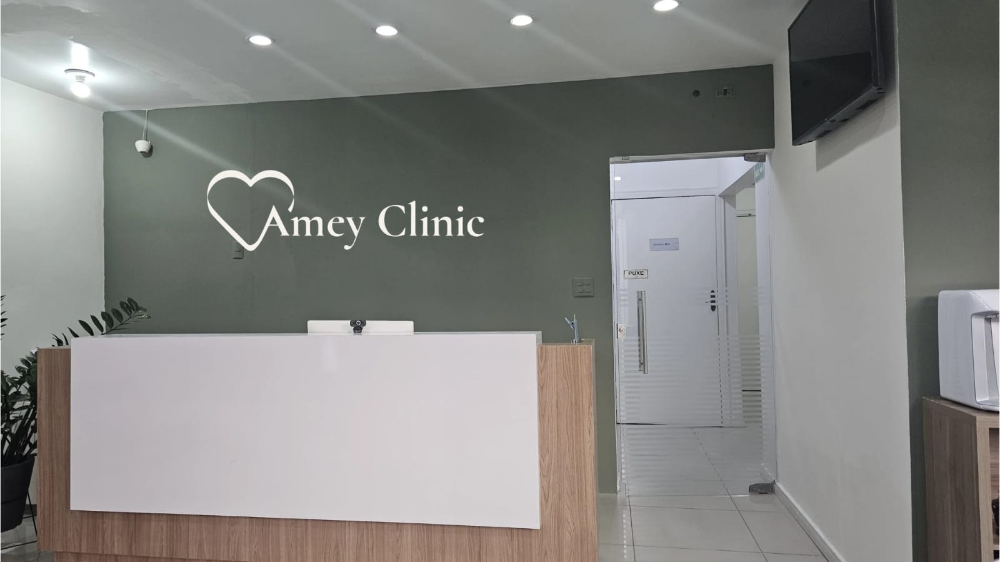

Cuidar do seu sorriso
é cuidar de você.
Desde 2011, a Amey Clinic cuida de cada paciente com atenção, técnica e decisões explicadas com clareza.
Agendar avaliação com orientação

Desde 2011
Construindo relações de cuidado, confiança e responsabilidade.

Cuidar também é orientar
Cada decisão é explicada com clareza, para que você escolha com segurança.